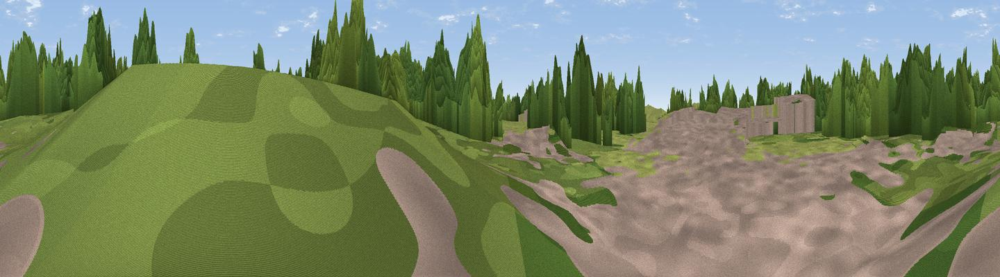

Raven Meols Hill
#44980 in England · top 94% of its area beats it · near Formby · path 224 mWhere it is
The exact computed spot (SD 27802 06305). Click the marker for map links.
Public access: the nearest public right of way is about 224 m away — the final stretch may cross private land. Computed from Natural England's CRoW access layer and OpenStreetMap rights of way — not the legal definitive map. Always verify locally.
The view, rendered

A 360° render of this exact spot computed from the terrain model, tree cover and land cover — summer colours, afternoon light, calibrated against photographs of famous viewpoints. Real trees, hedges and buildings will differ in detail.
The panorama
Grey silhouette: terrain skyline in each direction (720 bearings, Earth curvature and refraction included). Dashed green: skyline with trees (+15 m) and buildings (+8 m) as obstacles. Blue strip: how far the ground is visible on each bearing.
Where the view opens
Wedge length = distance to the farthest visible ground on that bearing (vegetation-aware). Rings at 10, 25 and 50 km.
What fills the view
40% grassland · 39% woodland · 17% built-up · 2% cropland · 1% bare ground ·
Angular shares of the visible panorama (visual magnitude), not map area. Landscape diversity 0.52 (0–1 Shannon).
Key numbers
More beautiful places nearby
The staircase of upgrades: each row has a higher view potential than everything closer. Driving times are estimates from straight-line distance, calibrated against real road routing — check an actual route before setting out.
| Place | Direction | Drive | Score |
|---|---|---|---|
| Viewpoint near Formby | WNW · 1 km | ~2 min | 53.3 |
| Viewpoint near Wallasey | S · 13 km | ~23 min | 59.9 |
| Viewpoint near Bidston | S · 17 km | ~29 min | 61.6 |
| Viewpoint near West Kirby | SSW · 20 km | ~34 min | 61.8 |
| Viewpoint near Caldy | SSW · 21 km | ~36 min | 68.0 |
| Viewpoint near Dalton | E · 22 km | ~37 min | 74.2 |
| Great Lawn | ENE · 37 km | ~56 min | 77.1 |
| Rivington Pike | ENE · 37 km | ~56 min | 81.9 |
53.54839, -3.09112 · source: osm peak · position refined by local search. Computed location — check access rights before visiting.